What makes a perfect date? What elements are necessary to make it perfect?
1. Culture
Include a cultural element in your date to show that you're intellectual and cultured — someone who values local traditions and admires unique architecture.
2. Local Delicacies
Show her that you have great taste by treating her to the best melon pan in the world, a grilled unagi onigiri for something a bit unconventional, and takoyaki for a classic favorite. Finish with fresh peaches and Shine Muscat grapes for a healthy and delightful dessert. Share each dish to create a more intimate and memorable experience.
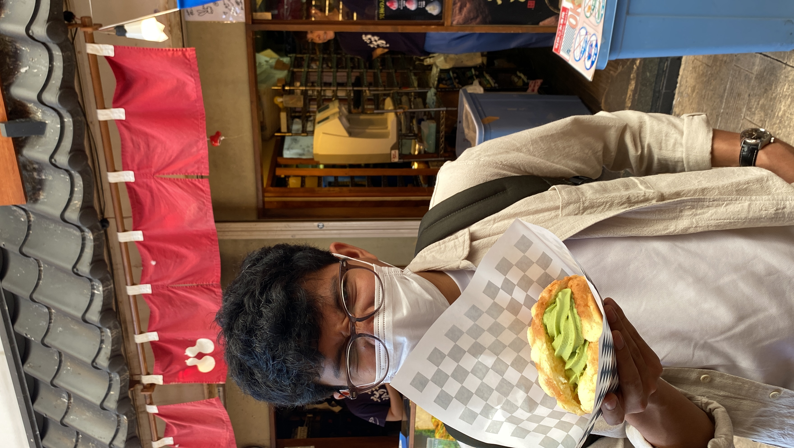
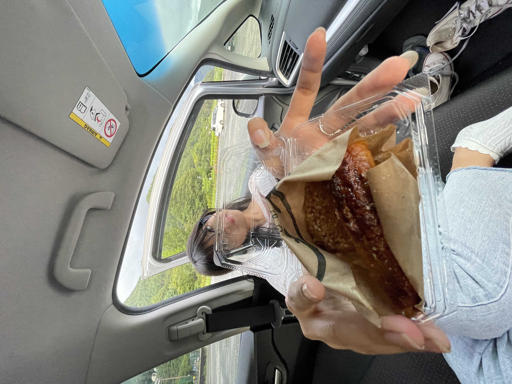
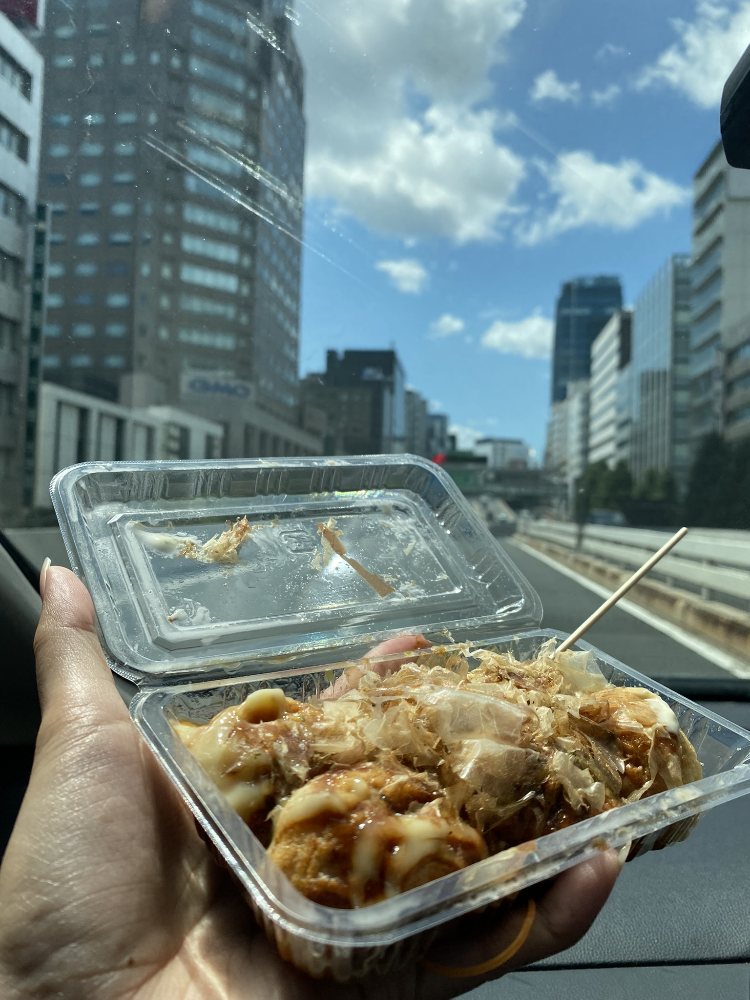
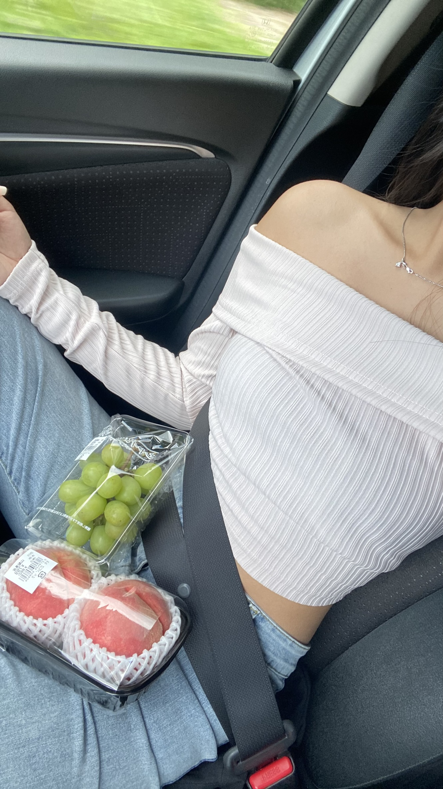
3. Roadtrip
Take a drive together and enjoy the intimacy of sharing a small, private space. You can talk, sing karaoke, snack on treats during traffic stops, and soak in the ever-changing scenery. Maybe you'll see a very bright, very big moon along the way. A road trip isn't just about the destination—it's about the journey you share along the way.
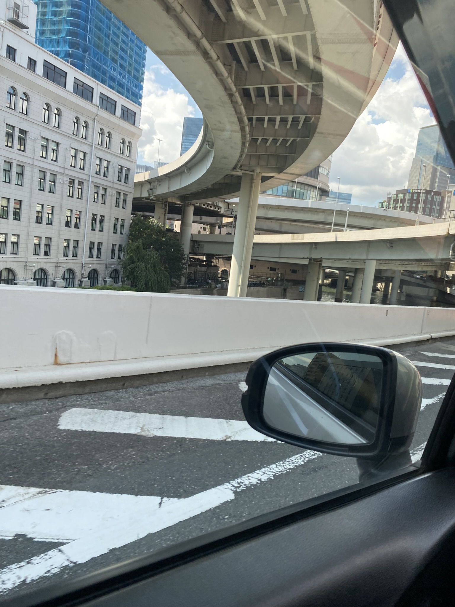
4. Picnic
Head outdoors and breathe in the fresh mountain air. Savor freshly picked local fruits and take in the stunning scenery. Even if the bakery you planned to visit is closed, you'll still create unforgettable memories.
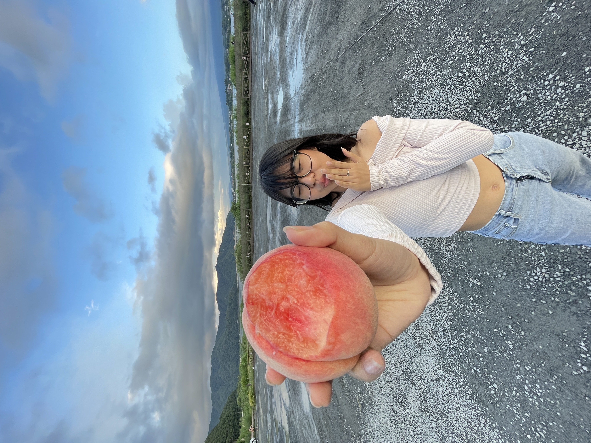
5. Cooking Session
Instead of going to a restaurant where everything is served to you, take your date to a barbecue joint where you can show your care through an act of service. Grill something special for them while they step away to freshen up, or struggling with a toilet problem. They'll appreciate the thoughtfulness and effort.
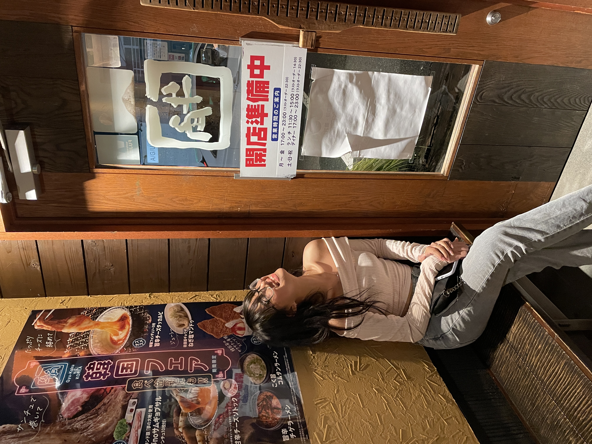
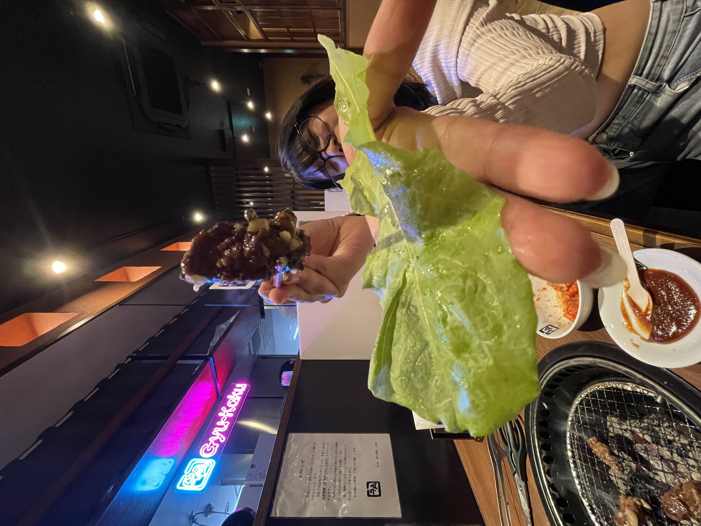
6. Night Stroll
Take a leisurely walk after dinner to stretch your legs and enjoy the vibrant glow of the city lights. You might even pick up a few souvenirs to remember the night.
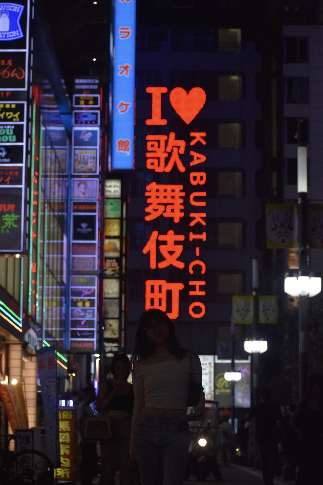
7. Godzilla
It couldn't be more romantic than this.
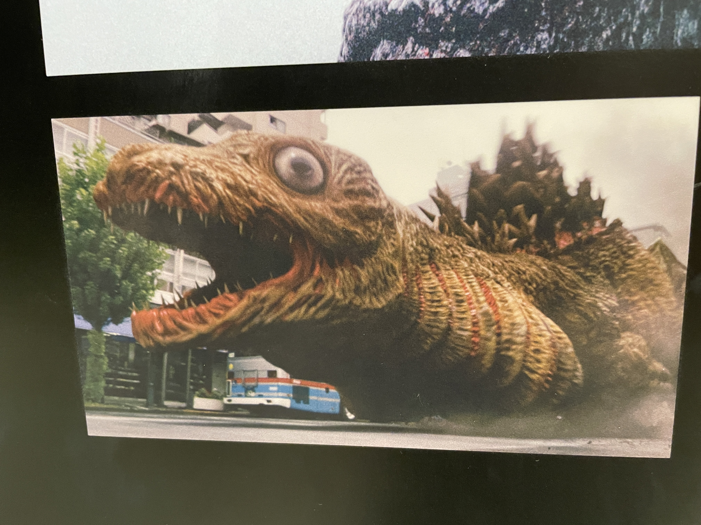
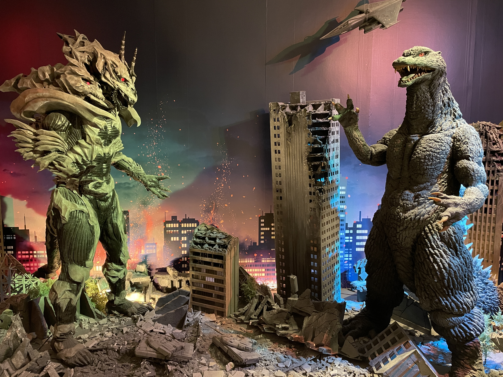
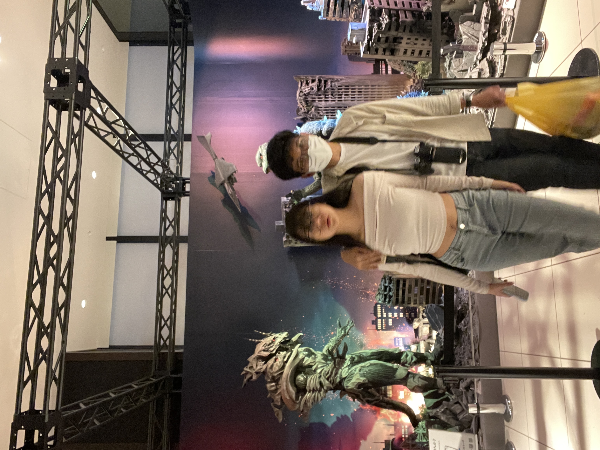
Last But Not Least
Show them your love by being attentive and fully present. Treat them with respect and kindness, making them feel truly cared for and appreciated. Surprise them with thoughtful gestures—perhaps even create a website to reminisce about your date and the memories you've shared. That'll be great.